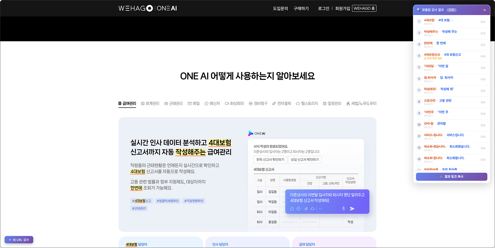

박유진Product Manager
새로운 것을 배우고 직접 만들어보는 걸 좋아하는 기획자예요. B2C 게임 플랫폼, 세무·회계 SaaS를 거쳐 현재는 보안이라는 새로운 도메인을 배우고 있어요. 업무 밖에서도 궁금한 것이 생기면 직접 만들어보거나 실험해보는 편이고, 최근에는 그 관심이 AI와 자동화 업무 도구를 만드는 쪽으로 이어지고 있어요.
 이스트시큐리티
이스트시큐리티
 더존비즈온
더존비즈온
 프롬더레드
프롬더레드
이 글에 대해
더존비즈온에서 제품 기획을 하며, 업무 중 어떤 일은 AI에게 맡기고 어떤 판단은 사람이 남겨야 하는지 직접 실험한 과정을 정리했어요. 첫 대상은 반복성이 높고 실패해도 리스크가 낮은 세무달력으로 정했죠. 작은 업무에서 AI가 잘하는 일과 사람이 확인해야 할 지점을 나눈 뒤, 같은 방식을 시안 대조, 화면 스펙 작성, 기존 화면 탐색, 정책 문서 정리까지 확장했어요.
진행 방법
기존 AI를 쓰던 방식
기존에는 AI를 어떻게 사용했나요?
AI는 주로 ChatGPT로 사용했어요. 초안 작성, 문서 확인, UX 문구 작성처럼 필요한 순간에 질문하고 답을 받는 방식이 중심이었죠. 지금도 이런 단발성 작업이나 빠르게 의견을 확인할 때는 ChatGPT를 계속 사용하고 있어요.
이 정책 문서에서 서비스 관리자 지정 조건만 찾아줘.

서비스를 배포받은 사용자라면 관리자로 지정할 수 있어요.
그럼 메뉴 권한까지 확인하는지도 같이 봐줘.
왜 Claude Code를 쓰기 시작했나요?
회사에서 Claude Code를 전사 도입한다는 소식을 듣고, 2주 먼저 Pro 버전을 먼저 써봤어요. Claude Code의 실행 결과를 귀엽게 알려주는 작은 프로그램이 있으면 좋겠다고 생각했고, 그 생각에서 개인 다마고치 프로젝트 Nuttie를 만들기 시작했어요.
집과 회사에서 같은 프로젝트를 이어서 작업하려고 GitHub를 썼어요. Nuttie를 다른 사람에게도 보여주고 싶어서, 별도 개발환경 없이 바로 실행되는 .exe 프로그램 형태로도 만들어봤죠. 이 과정에서 Git과 Claude Code CLI를 자연스럽게 익혔어요.


팀원에게 나눠주는 과정에서는 실패도 여러 번 겪었어요. 처음에는 GitHub 저장소를 클론해 실행하는 방식으로 공유했더니 상대방이 직접 환경을 준비해야 해서 번거로웠고, 응용 프로그램은 보안 정책상 실행이 안 되는 등 여러 문제를 겪어 이후에는 여러 방법을 테스트했어요.
그럼 실제 업무에는 어떻게 써봤나요?
2026년 8월부터 Claude Code를 본격적으로 사용했어요. 약 한 달 동안 회사 프로젝트에만 3,000만 토큰을 사용하며, 실제 기획 업무에 반복적으로 적용하고 검증했어요. 지금부터는 실제 업무에서 겪은 일화를 하나씩 소개해요.
다만 중요한 건 사용량 자체가 아니에요. Context가 불필요하게 커지지 않도록 메모리를 구조화하고, 반복되는 정보는 줄이며, 필요한 맥락만 유지하는 방식도 함께 다듬었어요. 이 과정은 입문 내용보다는 조금 더 깊은 주제라, 자세한 내용은 숙련자용 페이지에 따로 정리했어요.
실무에 들어가기 전, 먼저 알아야 할 AI의 상태
AI는 내 업무의 맥락을 처음부터 알고 있지 않아요. 쉽게 말하면, 역량은 있지만 우리 팀의 일하는 방식은 아직 모르는 신입사원에 가까워요. 참고 자료와 판단 기준, 예외, 완료 조건을 쌓아가며 업무 맥락을 학습시키는 과정이 필요해요.
| 질문 | AI가 이해해야 할 것 | 예시 |
|---|---|---|
| 어디서 | 어떤 자료와 데이터를 참고해야 하는지 | 기획서(Confluence, Figma), Jira, 실제 화면 |
| 무엇을 | 어떤 결과물을 만들어야 하는지 | Figma 시안, 화면 스펙, 정책 문서, 검수 결과 |
| 어떻게 | 어떤 기준으로 판단하고 예외를 처리할지 | 문구 일치 여부, 제외 조건, 검수 기준, 완료 조건 |
| 왜 | 이 일을 하는 목적이 무엇인지 | 사용자 불편 개선, 검수 누락 방지, 반복 업무 축소 |
제가 자주 쓰는 방법은, 육하원칙처럼 업무 맥락을 하나씩 채워가는 방식이에요.
지난달 결과물과 이번 달 원본으로 가르친 세무달력
업무 환경 세팅은 어떻게 진행했나요?
업무별로 Claude Code 창을 2~3개 띄워두고 사용했어요. 창마다 세무달력, 시안 대조, 문서 정리처럼 다른 작업을 맡겨 두고, 필요한 순간에 각각의 결과를 확인했어요.
- 피그마 링크 확인
- 6~7월 프레임 비교
- 컬러·레이아웃 규칙 추출
- 예외 케이스 정리
- 공휴일 표기 규칙 확인
- 공통 패턴 정리
- 위키 문서 검색
- 급여이체 API 명세 확인
- 요청·응답 값 정리
화면은 맥 터미널 기준이에요. 맥에서는 터미널, 윈도우에서는 PowerShell을 사용했고, VSCode 등 다른 도구도 있으니 본인에게 맞는 것을 쓰면 돼요.
첫 대상으로 왜 세무달력을 골랐나요?
저에게 세무달력은 어렵지는 않지만 반복적이고 번거로운 업무였어요. 매월 1일 해당 월의 세무 신고 일정을 공지사항에 올리는 일이라 이전 결과물과 원본 자료가 항상 남아 있었고, 만드는 순서와 확인 방식도 거의 같았거든요. 그래서 AI에게 업무 전체를 먼저 맡겨보고 어디까지 가능한지 확인하기에 부담이 적은 첫 실험 대상으로 적합했어요.
AI에게 맡길 일을 처음부터 시작하는 업무를 주는 것보다, 이미 하던 업무 중 AI가 실패해도 부담이 적은 일부터 맡겨보기로 했어요.
AI에게는 일을 어떻게 가르쳤나요?
처음부터 제작 규칙을 자세하게 설명하지는 않았어요. 이미 만든 세무달력 Figma 프레임 URL을 넘기고, '이 달력의 제작 방식을 분석해서 규칙을 .md 파일로 정리해줘'라고 요청했어요. 이번 달 세무 일정은 회사 내부 문서 URL을 함께 전달해 직접 참고하도록 했죠. Figma와 사내 문서는 MCP로 연결했고, 연결 방법을 모르더라도 Claude Code에 물어보며 하나씩 설정할 수 있었어요.


 Figma 프레임 분석제작 방식 파악
Figma 프레임 분석제작 방식 파악결과는 어땠나요?
세무달력 한 건 만드는 데 걸리던 시간이 2시간에서 2.9분으로 줄었어요. 지금은 '9월 세무달력 만들어 줘' 한 줄만 보내면, AI가 지난달 결과물에서 방식을 파악하고, 이번 달 원본에서 내용을 조회해 결과물을 만들어요.
2시간은 원본에서 일정 추출, Figma 제작, 테마 이미지, 원본 대조까지 네 단계를 합친 시간이에요. 그리고 첫 완성본은 15분 정도 걸렸었는데 시간을 단축하기 위해 Figma MCP간의 API 호출 왕복 횟수를 줄이는 방법 등을 강구해 2.9분까지 줄였어요.
작업하면서 학습한 제작 방식과 검수 기준은 .md로 남기고, 반복해서 쓸 내용은 Skill로 묶어 뒀어요. 이후에는 Claude가 필요할 때 이 내용을 참고할 수 있어서, '9월 세무달력 만들어 줘'처럼 짧게 요청해도 이전에 익힌 방식으로 이어서 작업할 수 있었어요.
- month-theme.md 읽기
- 9월 원본 일정 문서 확인
- 8월 세무달력과 화면 비교
- 일정 정리 및 반영
- 9월 세무달력 생성
- 원본 일정과 대조 검수

AI에게 업무를 맡기면서 문제는 없었나요?
결과를 만드는 것과 그 결과를 그대로 믿고 써도 되는 것은 달랐어요. 세무달력에서도 원본에는 링크가 없는 항목에 다른 영상이 연결된 적이 있었는데, 링크가 열리는지만 확인하던 검수 방식으로는 이 문제를 잡아내지 못했어요.
이렇게 다듬은 기준은 저만 아는 채로 두지 않고, 세무달력을 만들고 검수하는 과정 전체를 Claude Code Plugin으로 묶어 팀원들도 그대로 받아 쓸 수 있게 만들었어요. 담당자가 바뀌어도 같은 기준으로 세무달력을 만들 수 있어요.
AI가 잘 만들어주긴 하지만, 기준을 세우고 최종적인 검수는 '사람'이 해야한다는 걸 경험했어요.
다른 업무에도 AI 적용하기
다른 업무에는 어떻게 적용했나요?
최근 내가 업무의 어떤 과정에서 불편함을 느끼고 있을까를 고민해봤어요. 그러다 떠오른 것은 기획 검수였어요. 디자인 결과든 퍼블리싱 결과든 나온 결과물이 기획서와 맞는지 확인하는 이 검수를, 두 번이나 반복해서 거치고 있었거든요. 이 반복을 줄이면 커뮤니케이션 비용도, 기획 업무 자체도 줄일 수 있겠다 싶어서 여기부터 적용해 봤어요.
특히 세무·회계 도메인이라 어려운 용어가 많았고, 그만큼 단어 오타도 잦은 편이었어요.
결과물 검수는 특히 번거로웠어요. 텍스트가 틀렸거나 고칠 부분이 있으면 화면을 캡처해서 하나하나 옮겨 적어 전달해야 했거든요. 그래서 퍼블리셔와 같은 화면을 보면서 틀린 곳을 바로 확인할 수 있는 도구를 만들어 보기로 했어요.
그런데 왜 서버에 올려 공유하게 됐나요?
처음 만든 도구는 제 컴퓨터에서만 돌아서, 링크를 보내도 퍼블리셔 쪽에서는 열리지 않았기 때문이에요. 결과를 보여 주려면 다시 캡처해 보내거나 퍼블리셔를 제 자리로 불러야 했어요. 그래서 결과를 제 컴퓨터 밖에서도 열 수 있게 바꾸기 시작했어요.
Claude에게 제 컴퓨터가 꺼져 있어도 링크가 열리는 방법을 추천해 달라고 했더니 Cloudflare를 알게 됐어요.
링크로 연 결과 화면에서는 오른쪽 목록의 항목을 누르면 페이지의 그 자리로 바로 이동해서, 퍼블리셔도 틀린 곳을 따로 찾지 않고 확인할 수 있어요. 실제로 함께 일하는 퍼블리셔도 이 방식이 편하다고 말해 줬어요.

팀원이 바로 쓸 수 있게 공유하기
팀에는 어떻게 공유했나요?
받는 사람이 도구가 어떻게 돌아가는지 몰라도 바로 쓸 수 있어야 한다고 생각해서, 공유하는 방식에 가장 공을 들였어요. 막힐 때마다 다른 방식을 시도하며 여러 번 바꿔 봤어요.
지금은 Claude Code로 함께 쓰는 도구는 플러그인으로, 결과만 보면 되는 도구는 웹 링크로 공유해요. 플러그인은 저장소 권한이 없는 팀원도 설치할 수 있게 사내 포털에 설치 카드를 만들었어요. 카드에 적힌 한 줄만 복사해 실행하면 바로 설치돼요.
Claude Code를 켤 때마다 최신 버전을 자동으로 받아 오기 때문에, 새 버전을 낼 때마다 팀원에게 다시 설치해 달라고 안내할 필요가 없어요.

공유하고 문제는 없었나요?
서버가 끊겨도 쓰는 사람이 알려주지 않으면 저는 알 수 없었어요. 팀원은 원인을 모르니 그냥 안 되는 줄 알고 넘어가더라고요.

지금은 30초마다 서버 상태를 확인하고, 하나라도 응답이 없으면 브라우저 탭 아이콘이 빨갛게 깜빡이거든요. 다른 창을 보고 있어도 눈에 걸려서, 빠르게 서버 문제를 대응할 수 있게 됐어요.
점검 화면의 탭별 기능은 숙련자용 페이지에 정리했어요.
AI에게 맡길 일과 사람이 판단할 일 나누기
AI로 일하는 방식이 어떻게 달라졌나요?
중요도가 낮은 업무는 자동화해서 최종 확인만 하고, 남는 시간은 더 중요한 업무에 쓸 수 있게 됐어요.
| 전 | 후 | |
|---|---|---|
| 요청 방식 | 매번 형식·자료를 다시 설명 | 한 번 정한 기준을 그대로 사용 |
| 자료 확보 | 찾아서 복사해 넘김 | AI가 필요한 자료를 직접 찾음 |
| 결과 확인 | 같은 항목을 매번 확인 | 기본 확인까지 마친 결과를 판단 |
자기 업무에 AI를 쓰려면 어디서 시작할까요?
한 번에 다 자동화할 방법을 찾지 말고, 지금 하는 업무 중 하나부터 시작하면 좋겠어요. 처음부터 잘 될 거라고 기대하지 말고, 안 되는 부분을 하나씩 직접 고쳐 나가면 돼요.
AI에게 맡긴 것과 기획자가 남긴 것
- 정해진 순서 실행
- 자료 조회
- 규칙에 따른 정리
- 비교할 수 있는 기본 검수
- 무엇을 할지 결정
- 기준 설계
- 예외 판단
- 결과 판단과 최종 확인
더 깊이 보고 싶다면
대조 규칙 8개와 AI 판단 단계, 세무달력 검수기, 플러그인 폴더 구성과 자동 갱신, 도구를 나눠 쓰는 방식, 점검 화면(status-board) 전체 구성은 실제 설정과 실측 값으로 따로 정리했어요.
숙련자용 페이지 보기 →